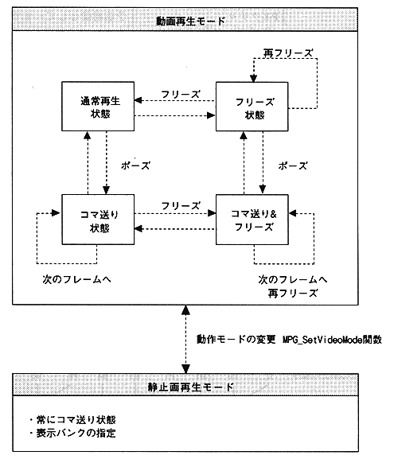

Return to previous page
｜
Return to menu
｜
Go to next page
3. Operation overview
The MPEG library has the following two operation modes for video playback.
(1) Movie playback mode
This is a mode for playing back movies. There are normal play state, freeze state, pause state, pause and freeze state.
(2) Still image playback mode
This mode plays back still images. Images of 4 banks at normal resolution and 1 bank at high resolution can be displayed.
∙ Audio can always be played. You can also synchronize video and audio.

Figure 3.1 Operation mode
Return to previous page
｜
Return to menu
｜
Go to next page